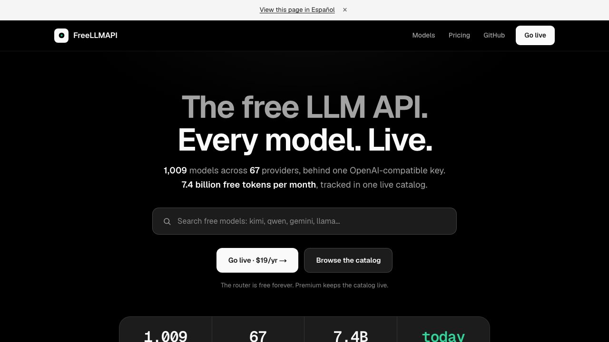

Qué es y qué no es
freellmapi es un proyecto gratuito y de código abierto (licencia MIT) que crea en tu ordenador una única dirección compatible con OpenAI y con Claude Code. Detrás junta los planes gratuitos de decenas de proveedores. Cuando un modelo llega a su límite o falla, el programa reenvía la petición al siguiente de tu lista, sin que tú tengas que cambiar nada.
Lo que consigues: poder seguir trabajando en Claude Code cuando se te acaba el cupo. Lo que no consigues: Claude gratis. Los modelos que responden son otros (de Google, Meta, Mistral y similares), con límites diarios y menos capacidad que Claude.
Repositorio del autor: github.com/tashfeenahmed/freellmapi. Todo lo que sigue lo hemos sacado de su README (revisado el 22 de octubre de 2026).
Paso 1: instálalo con un comando
Necesitas Docker instalado. Abre una terminal y ejecuta:
curl -fsSL https://freellmapi.co/install.sh | bashEl script crea la carpeta ~/freellmapi, genera una clave de cifrado, descarga la imagen y arranca el programa. Si prefieres leer antes de ejecutar, el autor publica el script en freellmapi.co/install.sh. En Windows, lo más fácil es el instalador .exe de la página de Releases.
Paso 2: pega tus claves gratis
- Abre
http://localhost:3001en tu navegador. - Ve a la página Keys.
- Crea una cuenta gratuita en cada proveedor que quieras usar (por ejemplo Google AI Studio, Groq o Cerebras), copia su clave y pégala ahí. No hace falta usarlos todos: con tres o cuatro ya tienes margen.
- En la cabecera de esa misma página verás tu clave unificada. Guárdala: es la que usarás en el paso 4.
Paso 3: ordena la cadena de modelos
En la página Fallback Chain decides el orden en que el programa prueba los modelos. Pon primero los más capaces que tengas disponibles y deja detrás los más rápidos o con más cupo. Cuando uno devuelve un error de límite (429) o falla, pasa automáticamente al siguiente.
Paso 4: conéctalo a Claude Code
Con una terminal abierta, ejecuta este comando cambiando la clave por la tuya:
npx freellmapi setup-claude --url http://localhost:3001 --api-key TU_CLAVE_UNIFICADASegún el README, el comando lee tu catálogo, hace una copia de seguridad de la configuración que ya tengas y la fusiona con la nueva. A partir de ahí, Claude Code usa tu dirección local y, si un modelo se agota, el programa salta al siguiente.
Qué conviene saber antes de usarlo
- No es Claude. Son modelos gratuitos de otros proveedores. Para el día a día pueden ir sobrados; para tareas muy complejas, sigue usando Claude.
- Sin garantías. El propio autor avisa de que no hay frontier models, la latencia varía, no hay SLA y la calidad baja a última hora del día, cuando los mejores modelos agotan su cupo diario (se renueva a medianoche UTC).
- Es para probar y aprender, no para producción. Si construyes algo serio encima, usa una API de pago.
- Tus peticiones viajan a los proveedores gratuitos que uses. Revisa las condiciones de cada uno sobre el tratamiento de tus datos y no pegues código o información confidencial.
- Cada proveedor tiene sus propias condiciones. Siguen aplicándose aunque pases por freellmapi; el README las comenta una a una.
- Existe un plan de pago opcional del autor (catálogo actualizado al momento). No lo necesitas para seguir estos pasos.
Documentación completa: README de freellmapi
Esta guía forma parte de Claude Code en español: todas las guías, en orden.
Preguntas frecuentes
¿freellmapi es gratis de verdad?
Sí: el programa es gratuito y de código abierto (licencia MIT) y los planes de los proveedores que conecta tienen capa gratuita. Existe un plan de pago opcional del autor para un catálogo más actualizado, que no necesitas para seguir los pasos.
¿Funciona con Claude Code de verdad?
Según el README, el comando setup-claude configura Claude Code para usar tu dirección local. Los modelos que responden no son Claude, sino modelos gratuitos de otros proveedores.
¿Es seguro pegar mis claves?
Según el README, las claves se guardan cifradas en tu propio equipo. Aun así, tus peticiones viajan a los proveedores que uses, así que no envíes información confidencial.
¿Qué pasa si un modelo llega a su límite?
El programa reintenta con el siguiente modelo de tu cadena, con tiempos de espera y rotación de claves, y la conversación sigue.
¿Sirve para trabajar de forma profesional?
El propio autor lo describe como una herramienta para experimentar y aprender, no para producción: no hay garantías de servicio y la calidad varía a lo largo del día.